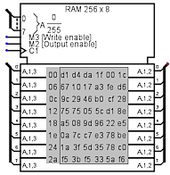
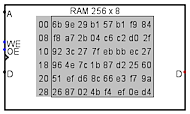
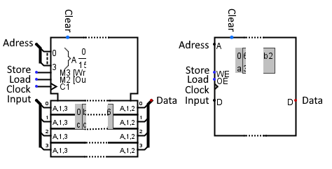
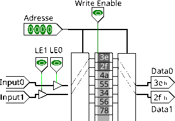

RAM
RAM
| Librairie : | Memory |  |
| Introduction : | 2.0 Beta 1 | |
| Apparence : |  |
Comportement
Le composant RAM, qui est de loin le composant le plus complexe des bibliothèques intégrées de Logisim, il mémorise jusqu'à 16 777 216 valeurs. Avec un maximum de 24bits d'adressage spécifiés dans l'attribut Largeur d'adresse. Chaque valeur pouvant comprendre jusqu'à 32 bits spécifiés dans l'attribut Largeur de données. En outre, l'utilisateur peut modifier des valeurs individuelles de manière interactive à l'aide de l'outil "Pousser" ( ), ou modifier
l'ensemble du contenu à l'aide du menu contextuel. Voir Composants de mémoire dans Guide de l'utilisateur.
), ou modifier
l'ensemble du contenu à l'aide du menu contextuel. Voir Composants de mémoire dans Guide de l'utilisateur.
Les valeurs actuelles sont affichées à l'intérieur de l'image du composant dans la zone grise. Les adresses affichées sont énumérées en gris à gauche de la zone d'affichage. À l'intérieur, chaque valeur est indiquée en hexadécimal. La valeur de l'adresse sélectionnée est affichée en texte inversé (blanc sur noir).
Le composant RAM prend en charge plusieurs interfaces différentes, en fonction des attributs Lecture asynchrone, Type de bus de données et Activation.
La propriété Type de bus de données permet de modifier l'architecture des bus de données soit un bus Input et un bus Data omnidirectionnel soit un bus data bidirectionnel.
- Par défaut on a un bus de chargement et de lecture séparé avec une commande synchrone
-
Un port de chargement piloté par le signal Store. Un port de lecture piloté par le signal Load. Le chargement et la lecture sont synchronisés par l'horloge selon le mode de déclenchement défini par la propriété trigger.
Si les deux lignes de commande sont à 1 alors la lecture s'effectue après l'écriture, ce processus peut être inversé par la modification de la propriété Comportement de lecture. - Lecture asynchrone et activation de la lecture par byte.
-
Si la propriété Activation est Par byte et la propriété Lecture asynchrone est paramétrée à Oui seul l'état du signal Load déclenche l'apparition des données sur le bus de sortie. Pour le chargement le fonctionnement reste le même que précédemment.
- Lecture asynchrone et activation de la lecture par ligne.
-
Si la propriété Activation est Par ligne, que la propriété Nombre de lignes est simple alors les données seront immédiatement présentent sur le bus de sortie dès le changement d'adresse. Pour le chargement le fonctionnement reste le même que précédemment.
- Lecture synchrone et activation de la lecture par ligne, plusieurs lignes.
-
Si la propriété Activation est Par ligne, que la propriété Nombre de ligne est différent de simple alors les données seront immédiatement présente sur le bus de sortie dès le changement d'adresse. Pour le chargement, les signaux supplémentaires LE1..LE7 permettent la sélection des lignes de données actives. Le mode de déclenchement par l'horloge est défini par la propriété Trigger.
Il existe d'autres réglages plus subtils, veuillez lire la description des broches et des propriétés si dessous pour plus de précision.
Pins
L'attribut Apparence permet deux différentes images pour ce composant. Logisim Evolution présente les entrées à l'ouest et les sorties à l'est, je présente les pins du haut en bas et de l'ouest à l'est.
- Clear
- Entrée : Cette broche n'est présente que si la propriété Broche d'effacement est positionnée sur Oui. Lorsque ce paramètre est à 1, toutes les valeurs en mémoire sont fixées à 0, quelles que soient les autres entrées.
- Adresse
- Bus entrée : Sélectionne la position de la mémoire à laquelle le circuit accède actuellement.
- Store
-
Entrée : Lorsqu'elle est activée, elle autorise le stockage des données à la position définie par la valeur présente sur le bus Adresse. Selon les valeurs de la propriété Trigger elle est active à 1 sur les valeurs Front montant/Front descendant avec la synchronisation par le signal d'horloge. Elle est active à 1 sur la valeur Niveau haut et à 0 sur la valeur Niveau bas indépendamment du signal d'horloge.
Ci-dessous vous pouvez observer un tableau qui présente les différents cas de déclenchement de l'écriture en mémoire en fonction de l'état des différentes propriétés du composant.
Mode de déclenchement écriture Propriété Trigger Signal Clock Signal Store Front montant ↑ 1 Front descendant ↓ 1 Niveau haut -- 1 Niveau bas -- 0 - Load
-
Entrée : Cette broche n'est présente que si la propriété Activation est positionnée sur Par byte.
Lorsqu'elle est active, elle autorise l'émission des données de la position définie par la valeur présente sur le bus Adresse.Ci-dessous vous pouvez observer un tableau qui présente les différents cas de lecture de la mémoire vers le port de sortie en fonction de l'état des différentes propriétés du composant.
Modes de déclenchement de la lecture Activation Trigger Lecture Asynchrone Signal Clock Signal Load Par byte Front montant No ↑ 1 Par byte Front descendant No ↓ 1 Par byte Niveau haut -- -- 1 Par byte Niveau bas -- -- 1 Par byte Sans effet Oui Sans effet 1 Par ligne Sans effet -- Sans effet -- - Clock
-
Entrée : Cette broche n'est présente que si la propriété Trigger est positionnée sur Front montant/Front Descendant et dans les autres cas si la propriété Activation est positionnée sur Par ligne. Au moment de son déclenchement, la mémoire enregistrera ou présentera les données. Le mode de déclenchement est défini par les paramètres de la propriété Trigger.
Observez les deux tableaux au-dessus. - LE0 à LE7
- Entrée : Ces broches ne sont présentes que si la propriété Activation est réglée sur Par ligne. Leur nombre (2,4,8) dépend de la propriété Nombre de lignes . Chaque broche active une des lignes d'entrée.
- Input
- Bus Entrée : Ce bus n'est présent que si la propriété Type de bus de données est positionnée sur deux bus omnidirectionnels. Il reçoit les données qui seront écrites dans la mémoire à la position spécifiée par la valeur des broches d'adresse au déclenchement du trigger. Voir tableaux au-dessus.
- Input0 à Input7
- Bus Entrée : Ces bus ne sont présent que si la propriété Activation est réglée sur Par ligne et que la propriété Nombre de lignes est différente de simple. Leur fonction est la même que l'entrée Input avec cette différence, Input0 pointe sur la position mémoire Adresse, Input1 pointe sur adresse + 1, Input2 pointe sur adresse + 2 et ainsi de suite. Chaque ligne d'entrée a un signal d'autorisation associée LE0..LE7.
- Data
- Bus Sortie : Ce bus n'est présent que si la propriété Type de bus de données est positionnée sur deux bus omnidirectionnels. Il émet les données qui seront lues à la position spécifiée par la valeur des broches d'adresse au déclenchement. Voir tableaux au-dessus.
- Data0 à Data7
-
Bus Sortie : Ces bus ne sont présent si la propriété Activation est réglée sur Par ligne et que la propriété Nombre de lignes est différente de simple. Leur fonction est la même que la sortie Data avec cette différence, Data0 émet les données de la position mémoire spécifiée par la valeur des broches d'adresse, Data1 émet adresse + 1, Data2 émet adresse + 2 et ainsi de suite.
La propriété Autoriser les accès non alignés ? détermine si une erreur est générée quand l'adresse n'est pas alignée sur un multiple du nombre de lignes.

Attributs
Lorsque le composant est sélectionné ou en cours d'ajout, les chiffres 0 à 9 modifient son attribut Largeur de bit d'adresse et les chiffres Alt-0 à Alt-9 modifient son attribut Largeur de bit de données.
- Largeur d'adresse
- Nombre de bits d'adresse. Le nombre de valeurs stockées dans la RAM est de 2Largeur d'adresse.
- Largeur de donnée
- La largeur des données en bit de chaque valeur individuelle dans la mémoire.
- Activation
-
Détermine de quelle manière les données sont présentées au composant.
Par byte : Un seul bus de donnée est présent.
Par ligne une ou plusieurs lignes de données composent le bus de donnée. Elles ont chacune un signal de sélection propre. La propriété Nombre de lignes permet d'en définir le nombre (1,2,4,8). - Type de RAM
-
Détermine comment est modifié le contenu de la mémoire en cas de redémarrage de la simulation :
Non Volatile le contenu de la mémoire n'est pas modifié.
Volatile; Le contenu de la RAM est réinitialisé à zéro ou aléatoirement ( selon les options de projet L'onglet Simulation). - Broche d'effacement
- Détermine si la broche Clear est présente ou pas. Si cette broche est à 1, le contenu de la mémoire est mis à 0 de manière asynchrone, les autres commandes n'ont plus d'effet.
- Nombre de lignes
- Cette propriété est présente seulement quand la propriété Activation est positionnée sur Par ligne. Détermine le nombre de lignes de donnée présente en entrée et sortie 1,2,4 ou 8. Chaque ligne étant pilotée au chargement par son propre signal (LE0..LE7). La ligne 0 pointe l'adresse 1, la ligne 1 pointe à l'adresse+1 et ainsi de suite. Voir la figure sous Data0..Data7
- Autoriser les accès non alignés ?
- Cette propriété est présente seulement quand la propriété Activation est positionnée sur Par ligne. Détermine si les lignes de donnée peuvent interagir avec l'ensemble des adresses de la mémoire ou si les lignes de donnée sont alignées sur les positions mémoire multiples de leur nombre, par exemple si vous avez deux lignes, la première ligne est reliée à adresse + 0 la seconde à adresse + 1 et votre adressage ne peut recevoir que des valeurs multiples de 2 dans le cas contraire les sorties seront en erreur (E).
- Trigger
-
Configure la façon dont l'entrée d'horloge est interprétée. Les valeurs :
Front montant indique que le composant doit mettre à jour sa valeur à l'instant où l'horloge passe de 0 à 1.
Front descendant indique qu'il doit mettre à jour sa valeur à l'instant où l'horloge passe de 1 à 0.
Niveau haut indique que la mémoire doit mettre à jour en continu lorsque l'entrée load est à 1.
Niveau bas indique qu'elle doit mettre à jour en continu lorsque l'entrée load est à 0. - Lecture asynchrone
-
Détermine si le signal d'horloge intervient dans le processus de lecture de la mémoire.
Oui signifie que seul le signal load déclenche la lecture.
Non, la lecture sera déclenchée par le signal load et un front du signal d'horloge (clock). - Comportement de lecture
-
Détermine le comportement du composant si la lecture et l'écriture sont activées en même temps.
Lecture après écriture : La donnée de la case mémoire pointée par Adresse sera écrite et ensuite lue et transmise en sortie.
Ecriture après lecture : La donnée de la case mémoire pointée par Adresse sera transmise en sortie et ensuite la valeur de la case mémoire sera modifiée par la donnée entrante. - Type de bus de donnée
-
Détermine l'architecture du bus de donnée. Les valeurs:
Bus bidirectionel : Un bus est présent pour l'entrée et la sortie des données. Il faudra utiliser des buffers contrôlés pour gérer la circulation des données. Bus omnidirectionel : Deux bus un en entré et un en sorti sont présent. - Etiquette
- Le texte de l'étiquette associée au composant.
- Police de l'étiquette
- La police de caractères avec laquelle l'étiquette doit être affichée.
- Etiquette visible
- Si l'étiquette est visible ou non.
- Apparence
- Logisim Classic: présente les bascules comme le faisait logisim. Logisim-HolyCross / Logsim-Evolutions: nouvelle présentation des bascules à la manière de la CEI.
Comportement de l'outil pousser
Voire Editer la mémoire dans le Guide l'utilisateur.
Comportement de l'outil text
Permets de modifier l'étiquette associée au composant.
Menu contextuel
Voire Le menu contextuel et les fichiers dans le Guide l'utilisateur.
Retour à Référence de la bibliothèque